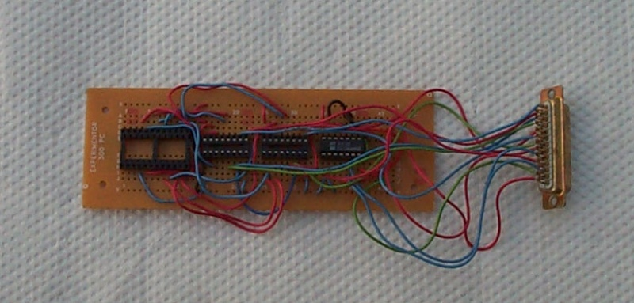

Alice I
I lived in Santa Clara, California (south of the San Francisco Bay) from 1993 until 1994, and then in Santa Barbara (two hours north of Los Angeles) from then until the summer of 1995. I spent a lot of time working on MacBSD during those years, but I also spent a lot of time thinking about what I thought I was supposed to be doing, which was computer hardware. (Now I'm much more honest with myself. My goals are sitting on my ass eating uncooked cookie dough watching the Friends double header at 7 PM on UPN.) In early 1994, I resigned from Altera because I wasn't producing results and felt thoroughly discouraged. Self-loathing can be quite motivating, so I spent a lot of time working with MacBSD and experimenting with electronics, trying to accomplish and relearn a lot of stuff.
Since the original goals of the Alice Project were still clearly in my head, I thought I would take the next step down the long road of educating myself. Over those two years, I (re)learned how to build logic circuits and refined a procedure for printing my own circuit boards. Most computer science programs include a course or two in electronic design. I had forgotten most of mine but had most of my notes and textbooks. With those in hand, I built some simple breadboarded circuits including a counter connected to a hexadecimal LED display and a static RAM (SRAM) test circuit.
After I moved to Santa Barbara to work for Tenon on MachTen, I bought an EPROM programmer and decided to try to build a simple computer.

I designed and built a main board including a Z-80 CPU, RAM, and ROM. I created a circuit diagram using xfig, but found it lacking some features I needed, so later I switched to tgif. I wanted to print my own circuit board, so I created an initial sketch of the printed circuit using graph paper, and I routed the traces by hand.

I subsequently created an electronic version of the circuit master with tgif, but had to make several revisions because I was not working from a particularly thorough design.

The final main board turned out okay, including a switch to place the ROM at address 0. My original plan was to build a second device that would connect to the main board through an address/data bus for debugging. That way I could power the board up with the switch off, fill memory at 0 with a test program, and then run that program. It turned out to be too hard to implement and I basically left the switch turned on and always burned a new EPROM if I needed to change the program.

A DB-25 connector allowed me to plug in an output board; I wanted to make some additional boards but finally decided to move on to Alice II instead. The one board I made decoded the I/O address 00H and output the data as two hex digits using 4495 hex-to-seven-segment-LCD-drivers.
A DB-9 connector connected the clock board to the main board. This clock was controlled by a potentiometer and had a range something like from .1 Hz to 1 KHz.

I found a free Z-80 assembler called a-z80, by William Colley, III. It worked really well for me for the prototype Alice I and continued to work for us for Alice II. I wrote some code to display the string C0dE15C0dE, or “code is code”. When I ran the clock very slow, you could see the string slowly scroll across the two hex digits on the output board.
OB1 EQU 0C0H OB2 EQU 00DH OB3 EQU 0DEH OB4 EQU 0E1H OB5 EQU 015H OB6 EQU 05CH OB7 EQU 0C0H OB8 EQU 00DH OB9 EQU 0DEH LD A, OB1 OUT (0), A LD A, OB2 OUT (0), A LD A, OB3 OUT (0), A LD A, OB4 OUT (0), A LD A, OB5 OUT (0), A LD A, OB6 OUT (0), A LD A, OB7 OUT (0), A LD A, OB8 OUT (0), A LD A, OB9 OUT (0), A OUT (0), A OUT (0), A OUT (0), A OUT (0), A LD A, 0 LOOP OUT (0), A INC A JP LOOP HALT END
One thing I found out immediately is that it's important to find a supplier nearby with a decent range of parts. In 1995, there weren't very many great suppliers in Santa Barbara proper. The nearest large electronics store was an hour North, in Santa Maria, and it's very frustrating to discover at 4 PM that you don't have a part and know that, even though the store doesn't close for an hour, you can't get there before it closes.
Alice I was a fun diversion in the evenings at Santa Barbara. During the day I worked as the sole tech support engineer at Tenon Intersystems, the makers of MachTen, a UNIX execution environment for MacOS. I spent a lot of time learning about graphics, NetBSD, and electronics when I was not at work. Building an actual computer with CPU, RAM, ROM, and an output device was really inspiring.